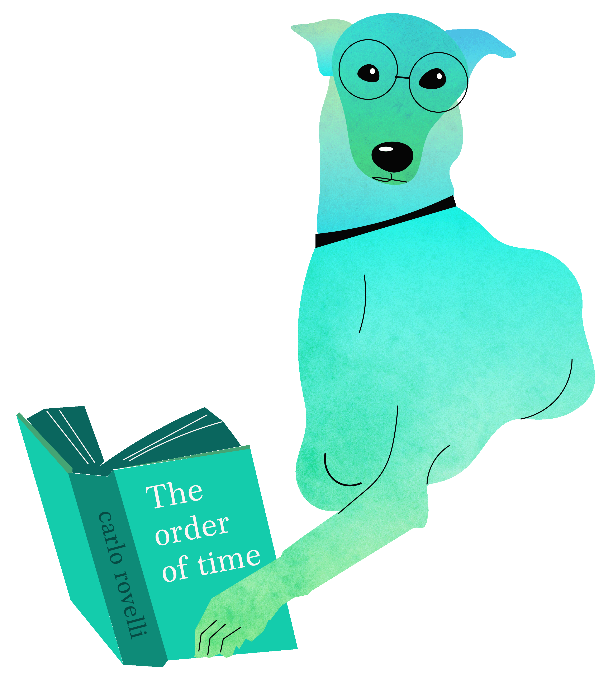

I am a visual and experience-focused designer who believes in creating anything novel, immersive and impactful.
Along with my visual communication background, I enjoy working with new media and mixed reality to create research, prototype and test with an all round and in depth perspective. I am a quick learner, and adept at solving problems on the go.
When I am not designing you can find me taking care of my dogs, or reading a good book. I also love high- altitude trekking, but when I'm in the city I just settle for walking everywhere.
contact me at anikapravin@outlook.com
